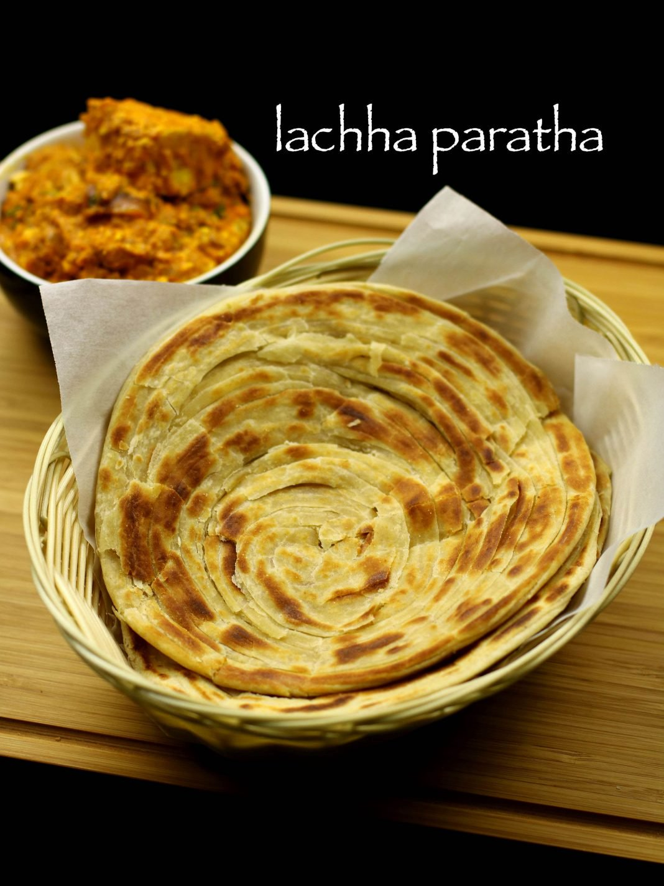

|  |
Lachha Paratha |
Ingredients
- 1 cup wheat flour / atta
- 1 cup maida / plain flour / all-purpose flour
- ¾ tsp salt
- 1 tsp sugar
- pinch of baking soda, optional
- 2 tbsp oil
- ½ cup milk, warm
- water as required, to knead
- ¼ cup wheat four / atta
- oil as required
Instructions
Lachha paratha dough recipe:
Firstly, in a large mixing bowl, take maida and wheat flour.
Additionally, add salt, sugar, baking soda and a tsp of oil.
Furthermore, crumble well with your hands,
Now add milk and start to knead.
Add water as required and knead to smooth and soft dough.
Cover with moist cloth and rest for 30 minutes.
Lachha paratha recipe:
Firstly, pinch a large sized ball dough, roll and flatten it.
Also dust with some wheat flour.
Furthermore, roll it into a thin circle as of chapathi. Roll as thin as possible.
Grease the chapathi with oil and sprinkle wheat flour over it.
Now start creating pleats by folding with the help of fingers.
Stretch the pleated dough as much as possible.
Begin to roll the pleated dough like a swiss roll.
Furthermore, secure the end by pressing gently.
Take the rolled ball and dust with some wheat flour.
And start rolling to a thin circle.
Take chapathi tawa and place the rolled paratha.
After a minuter flip off and cook the other side.
Once the golden brown spots start appearing on both sides grease with oil.
Furthermore, flip and roast both sides.
Then crush the paratha to form layers.
Finally, serve roti immediately with curry of your choice.